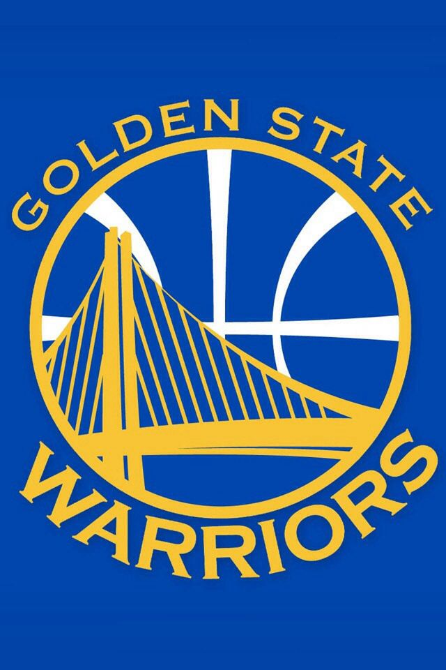

Golden State Warriors
|  |
O Golden State Warriors é uma franquia de basquete da NBA com sede em San Francisco, Califórnia. Fundada em 1946, a equipe conquistou vários títulos da NBA, sendo mais notável por sua era recente de sucesso. Os Warriors se destacaram nas temporadas recentes, liderados por jogadores como Stephen Curry, Klay Thompson e Draymond Green, conquistando vários campeonatos, incluindo o título de 2015. Eles são conhecidos por seu estilo de jogo rápido e seu foco em arremessos de longa distância, que transformou a dinâmica do basquete moderno. O Chase Center, localizado em San Francisco, é a casa dos Warriors, e a equipe tem uma base de fãs apaixonada que a acompanha em todo o país. A equipe montou diversas estrelas ao longo de sua história, como os jogadores Paul Arizin, Tom Gola, Neil Johnston, Luigi Rock, Ricka Barry e diversos outros jogadores. Sendo liderados por esses jogadores, ganharam o campeonato da NBA algumas vezes nos anos de 1947, 1956, 1975, 2015, 2017 e 2018. A equipe fez também registros impressionantes e importantíssimos, são eles: melhorar temporada regular de todos os tempos, a maioria das vitórias de uma temporada e melhor corrida de pós-temporada de todos os tempos. A franquia é amplamente reconhecida por seu sucesso recente na NBA e pela revolução que trouxe ao jogo com seu estilo de "small ball" e ênfase em arremessos de três pontos. Os Warriors continuam a ser uma das equipes mais emocionantes e competitivas na liga, contribuindo para o crescimento e popularização da NBA em escala global. |